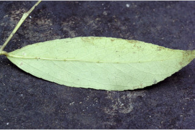
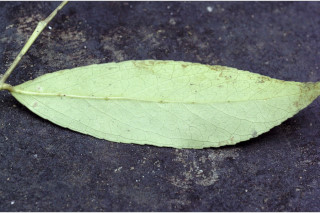

Bark brownish, irregularly scaly; blaze yellowish.
ತೊಗಟೆ ಕಂದು ಬಣ್ಣದಲ್ಲಿದ್ದು,ಅನಿಯತವಾದ ಚಕ್ಕೆ ರೂಪದಲ್ಲಿರುತ್ತದೆ;ಕಚ್ಚು ಮಾಡಿದ ಜಾಗ ಹಳದಿ ಛಾಯೆ ಹೊಂದಿರುತ್ತದೆ.
Bark brownish, irregularly scaly; blaze yellowish.
மரத்தின் பட்டை ப்ரவுன் நிறமானது, ஒழுங்கற்ற செதில்களாக உதிருபவை; உள்பட்டை மஞ்சள் நிறமானது.
Young branchlets terete, pubescent.
ಕಿರುಕೊಂಬೆಗಳು ದುಂಡಾಗಿರುದ್ದು, ಮೃದುತುಪ್ಪಳದ ಸಮೇತವಿರುತ್ತವೆ.
Young branchlets terete, pubescent.
சிறியநுனிக்கிளைகள் குறுக்குவெட்டுத் தோற்றத்தில் வளையமானது, உரோமங்களுடையது.
Leaves simple, alternate, spiral; petiole ca.0.3 cm long, planoconvex in cross section, minutely pubescent when young; lamina 4.5-10 x 1-2.2 cm, lanceolate to elliptic-lanceolate, apex acuminate, base attenuate to cuneate, margin crenate-serrate, glabrous, coriaceous, glands on the midrib beneath; midrib raised above; secondary_nerves 4-6 pairs; tertiary_nerves broadly reticulate, not prominent.
ಎಲೆಗಳು ಸರಳವಾಗಿದ್ದು ಪರ್ಯಾಯ ಮತ್ತು ಸುತ್ತು ಜೋಡನಾ ವ್ಯವಸ್ಥೆಯಲ್ಲಿರುತ್ತವೆ; ತೊಟ್ಟುಗಳು ಅಂದಾಜು 0.3 ಸೆಂ.ಮೀ. ಉದ್ದವಿದ್ದು, ಅಡ್ಡ ಸೀಳಿದಾಗ ಸಪಾಟ ಪೀನ ಮಧ್ಯದ ಆಕಾರ ಹೊಂದಿರುತ್ತವೆ , ಎಳೆಯದಾಗಿದ್ದಾಗ ಸೂಕ್ಷ್ಮ ಮೃದುತುಪ್ಪಳದಿಂದ ಕೂಡಿರುತ್ತವೆ;ಪತ್ರಗಳು 4.5 - 10 X 1 –2.2 ಸೆಂ.ಮೀ. ಗಾತ್ರ, ಭರ್ಜಿಯಿಂದ ಚತುರಸ್ರ - ಭರ್ಜಿಯವರೆಗಿನ ಆಕಾರ ಹೊಂದಿದ್ದು, ಕ್ರಮೇಣ ಚೂಪಾಗುವ ತುದಿ, ಒಳಬಾಗಿರುವುದರಿಂದ ಬೆಣೆಯಾಕಾರದ ಬುಡ,ದುಂಡೇಣು - ಗರಗಸ ದಂತಿತವಾದ ಅಂಚು ಹೊಂದಿದ್ದು ,ರೋಮರಹಿತವಾಗಿರುತ್ತವೆ, ಮೇಲ್ಮೈ ತೊಗಲನ್ನೋಲುವ ಮಾದರಿಯಲ್ಲಿತ್ತದೆ,ಪತ್ರಗಳ ತಳಭಾಗದ ಮಧ್ಯ ನಾಳದ ಮೇಲೆ ರಸಗ್ರಂಥಿಗಳಿರುತ್ತವೆ; ಮಧ್ಯನಾಳ ಪತ್ರದ ಮೇಲ್ಭಾಗದಲ್ಲಿ ಮೇಲೆದ್ದಿರುತ್ತದೆ; ಎರಡನೇ ದರ್ಜೆಯ ನಾಳಗಳು 4 ರಿಂದ 6 ಜೋಡಿಗಳಿರುತ್ತವೆ; ಮೂರನೇ ದರ್ಜೆಯ ನಾಳಗಳು ವಿಶಾಲ ಜಾಲಬಂಧ ನಾಳ ವಿನ್ಯಾಸದಲ್ಲಿದ್ದು ಪ್ರಮುಖವಾಗಿರುವುದಿಲ್ಲ.
Leaves simple, alternate, spiral; petiole ca.0.3 cm long, planoconvex in cross section, minutely pubescent when young; lamina 4.5-10 x 1-2.2 cm, lanceolate to elliptic-lanceolate, apex acuminate, base attenuate to cuneate, margin crenate-serrate, glabrous, coriaceous, glands on the midrib beneath; midrib raised above; secondary_nerves 4-6 pairs; tertiary_nerves broadly reticulate, not prominent.
இலைகள் தனித்தவை, மாற்றுஅடுக்கமானவை, சுழல் போன்று அமைந்தவை; இலைக்காம்பு 0.3 செ.மீ. நீளமானது, குறுக்குவெட்டுத் தோற்றத்தில் பிளேனோகான்வக்ஸ், இளம்பருவத்தில் நுண்ணிய உரோமங்களுடையது; இலை அலகு 4.5-10 x 1-2.2 செ.மீ., ஈட்டி வடிவானது முதல் நீள்வட்டம்-ஈட்டி வடிவானது, அலகின் நுனி அதிக்கூரியது, அலகின் தளம் அட்டனுவேட் முதல் ஆப்பு வடிவானது, அலகின் விளிம்பு பிறை போன்ற பற்களுடையது-ரம்ப பற்களுடையது, உரோமங்களற்றது, கோரியேசியஸ், அலகின் கீழ்பரப்பில் மையநரம்பு சுரப்பிகளுடையது; மையநரம்பு மேற்புறத்தில் அலகின் பரப்பைவிட உயர்ந்து இருக்கும்; இரண்டாம் நிலை நரம்புகள் 4-6 ஜோடிகள்; மூன்றாம் நிலை நரம்புகள் அகன்ற வலைப்பின்னல் போன்றவை, தெளிவற்றது.
Inflorescence axillary and terminal, lax racemes; flowers white to rose colored; pedicel up to 0.7 cm long; petals outside pubescent.
ಪುಷ್ಪಮಂಜರಿ ಅಕ್ಷಾಕಂಕುಳಿನಲ್ಲಿ ಮತ್ತು ತುದಿಯಲ್ಲಿನ ಸಡಿಲವಾದ ಮಧ್ಯಾಭಿಸರ ಮಾದರಿಯವು; ಹೂಗಳು ಬಿಳಿಯಿಂದ ಗುಲಾಬಿವರೆಗಿನ ಬಣ್ಣದಲ್ಲಿರುತ್ತವೆ; ತೊಟ್ಟುಗಳು 0.7 ಸೆಂ.ಮೀ. ವರೆಗಿನ ಉದ್ದ ಹೊಂದಿರುತ್ತವೆ; ಪುಷ್ಪ ದಳಗಳ ಹೊರ ಮೇಲ್ಮೈ ಮೃದುತುಪ್ಪಳದಿಂದ ಕೂಡಿರುತ್ತವೆ.
Inflorescence axillary and terminal, lax racemes; flowers white to rose colored; pedicel up to 0.7 cm long; petals outside pubescent.
மஞ்சரி இலைக்கோணங்களில் மற்றும் தண்டின் நுனியில் காணப்படுபவை, நெருக்கமில்லாமல் அமைந்தவை, ரெசீம் வகை மஞ்சரி; மலர்கள் வெள்ளை நிறமானது முதல் ரோஸ் நிறமானது; மலர்காம்பு 0.7 செ.மீ. நீளமானது; அல்லி இதழ்கள் வெளிப்புறம் உரோமங்களுடையது.
Berry, smooth, globose; seeds many.
ಬೆರ್ರಿಗಳು ನಯವಾಗಿದ್ದು,ಗೋಳಾಕಾರದಲ್ಲಿರುತ್ತವೆ;ಬೀಜಗಳ ಸಂಖ್ಯೆ ಹಲವಾರು.
Berry, smooth, globose; seeds many.
முழுச்சதைகனி (பெர்ரி), வழுவழுப்பானது, கோள வடிவமானது; விதைகள் எண்ணற்றது.


 
